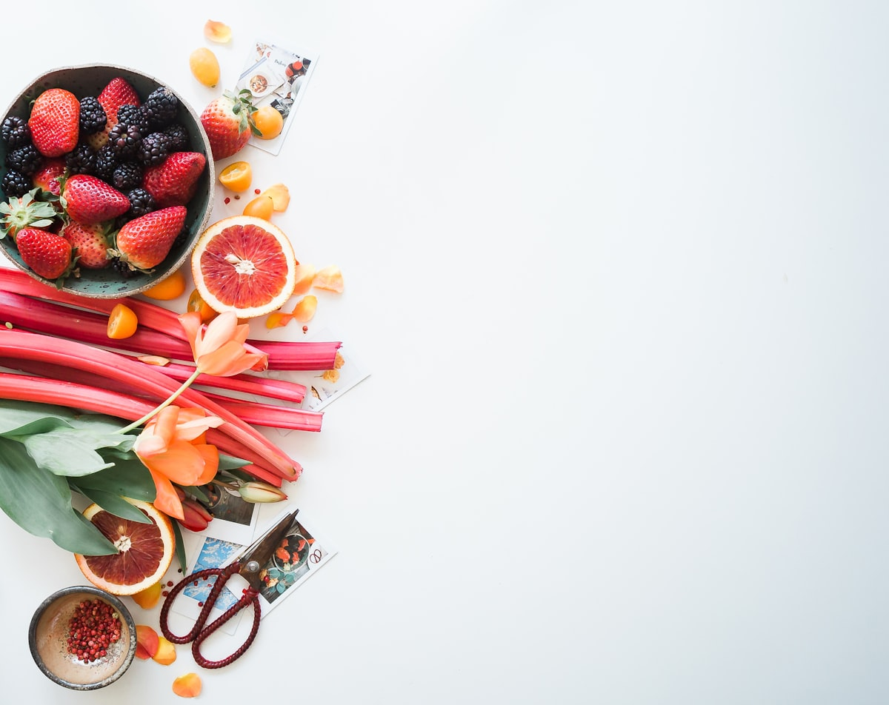

Saturday market · issue 41
Oil, salt, and the last good loaf.
We bottle what the valley actually grows. Harvest notes on every label. Nothing blended to taste the same in January as it did in August.
Saturday market · issue 41
We bottle what the valley actually grows. Harvest notes on every label. Nothing blended to taste the same in January as it did in August.
